Upgrading to a game that allowed more in depth modding
In a previous article I wrote about how I started in game development; I made a rocket launcher fire an oversized red box and then experimented more in small steps to eventually create complete mods that I released on the internet for others to enjoy.
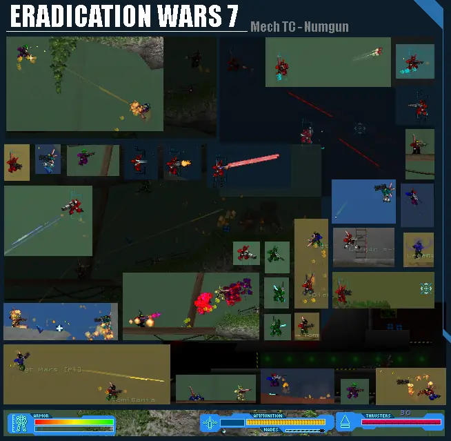
In the first game, Soldat, all I could do was change the look of existing content - which was limited to these things:
- Interface HUD (health, ammo and jetpack meters).
- Player character graphics.
- Usable weapon and item graphics.
- Game effect graphics and sounds.
- Some ingame text.
It was enough to transform the look and feel of the game, but it didn't offer opportunities to change how the game itself played. I couldn't make new content; I could only give it a new skin. There wasn't much in terms of game design involved in this type of modding.
Later I came across a different game, Cortex Command, which did allow me to freely create entirely new characters, new vehicles, new mechanics, new features, new systems and more using its innovative somewhat-easy-to-use modding system. I could even create entirely new games within this game thanks to its inherent structure.
Continued fun through silly experiments
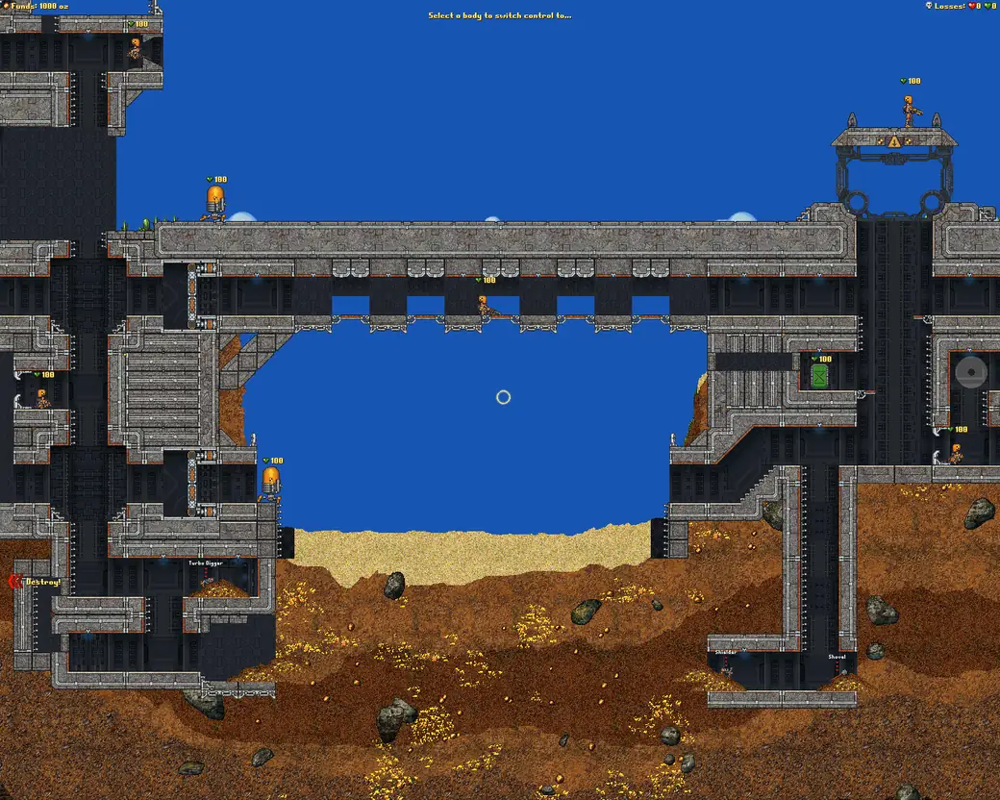
Much like in Soldat, my first experiments in Cortex Command were merely silly experiments, just to see if I could make a crazy idea I had actually work ingame. And many times I succeeded to my delight.
My first ever mod in Cortex Command was to take an existing mod by someone else and just make a small change to see if I could make it work. In this case, it was Elmo from Sesame Street, someone made him into a playable character and I modded him to weigh 9999999 kg just for laughs.
In Cortex Command, a fully physics driven game, characters are brought onto the level with rocket ships that come from space and these ships try to safely land onto the ground to release their cargo unharmed. The rocket ships are affected by the mass of the cargo they carry so when I ordered this modified 9999999 kg Elmo to come to the level, the poor rocket came screaming down from space at an alarming speed and punched through the entire terrain all the way down to the bottom of the level before exploding violently. It was the most hilarious thing I'd seen. Poor Elmo didn't survive either.
After that I kept learning from other mods by looking at how they were built. I changed some parts and values around to create "cool fun things". My skills in pixel-art gained from my time in Soldat modding came in handy when I started creating my own objects from scratch. I kept evolving and making more and more "cool stuff", which amounted to all kinds of interesting characters, vehicles, guns, items, objects and whatever else was possible to build within the game.
A small montage of mods I made for Cortex Command
These images give somewhat of an overview of all the sorts of things I made. Here you can get a small glimpse of the sheer amount of experimental mods I made in my quest to make “cool stuff”.
Note: This isn’t even all of it; many of the items have been through many changes, multiple iterations/versions, some content was lost and this doesn’t show many collaborative projects nor the extra work I did in remixing other mods or reviving them after a game update killed them.
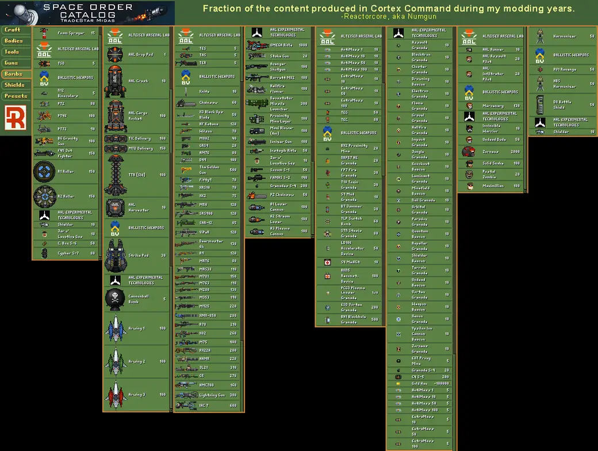
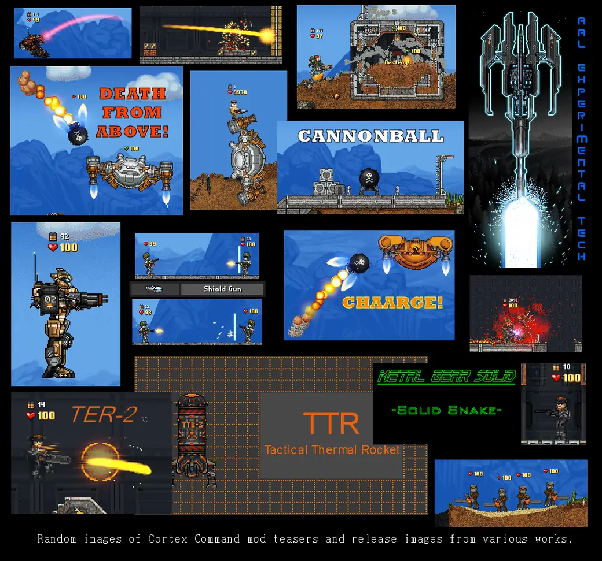
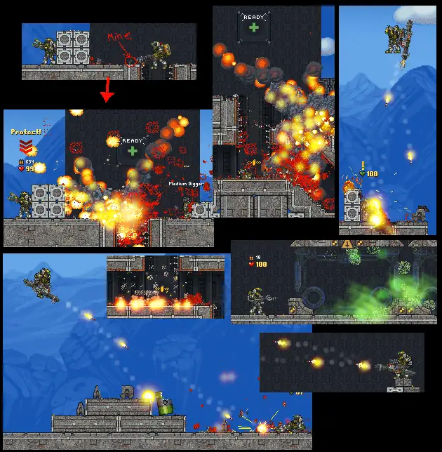
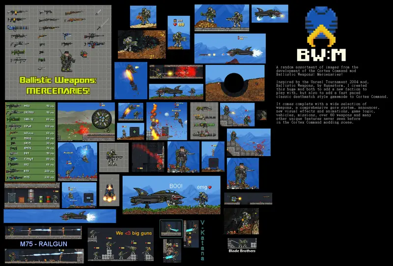
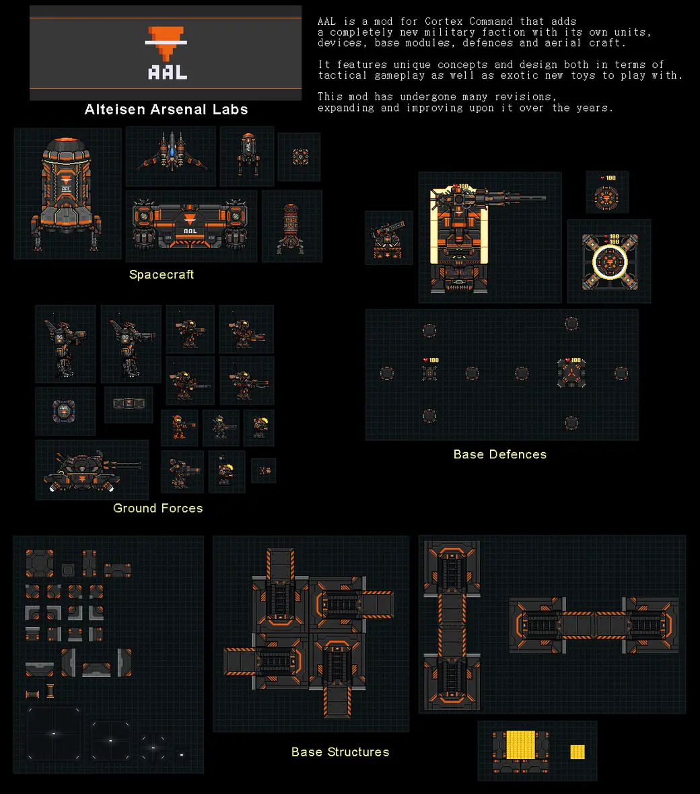
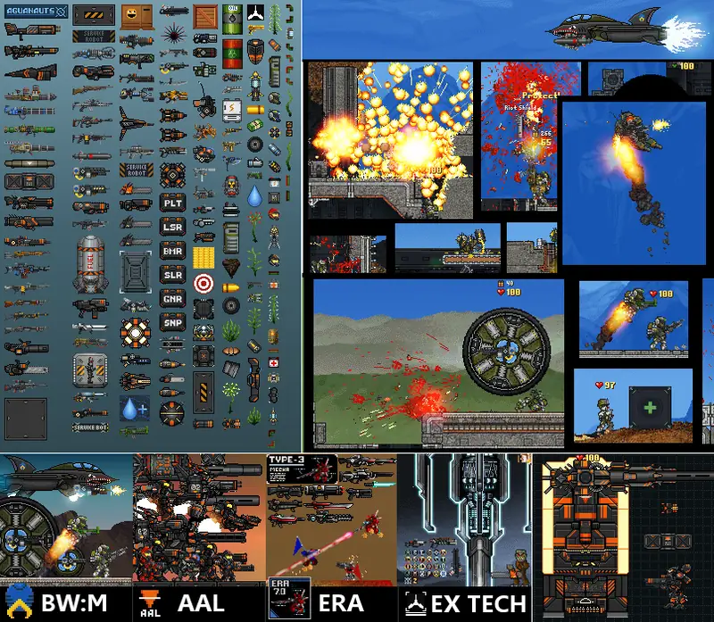
Blissfully ignorant of game design the entire time
All this was mostly about me overcoming myself and achieving something unique that the game didn't have before. I was learning how the game's systems, features and mechanics all worked without actually being concerned if any of it was adhering to any game design or balance, except superficially.
I'd merely mimic what the vanilla (original) content of the game did and tried to match my values to be somewhat in-line with them without really thinking too hard about why they were made like that in the first place. Back then in the early stages I was plenty happy with the funny things I made and people enjoyed them too when I uploaded them for others to download and play with.
After all, I wasn't good enough with the tools to create anything big or ambitious since there was still so much to learn. There was no reason to care about game design since it was something I felt was out of reach to me.
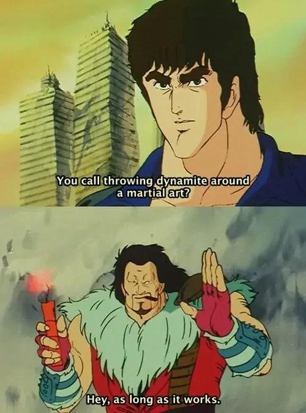
Later, a trend popped up in the community to create "faction mods". In this trend a modder creates a set of characters, weapons, vehicles and structures that belong to a faction, a unique military group with a consistent theme, style and doctrine. Some faction mods recreated existing ideas like bringing in Warhammer 40K factions, stuff from Halo, Half Life 2 and other popular games. Other faction mods created completely new unique groups with their own fictional backstory.
This pushed modders and myself to think of the content we were making as a whole and take balancing more seriously to create a fair and equal game experience so that it would be "fun" to fight as whatever faction I chose to play as and equally be fun to fight against them too.
Naively following the existing norms, my mind unable to diverge
Initially, I took a naive approach and just matched my values for health, weight and breaking limits to my things to be similar to what the original base content of the game was using, without really considering what the idea behind those values were and their role in shaping the game experience.
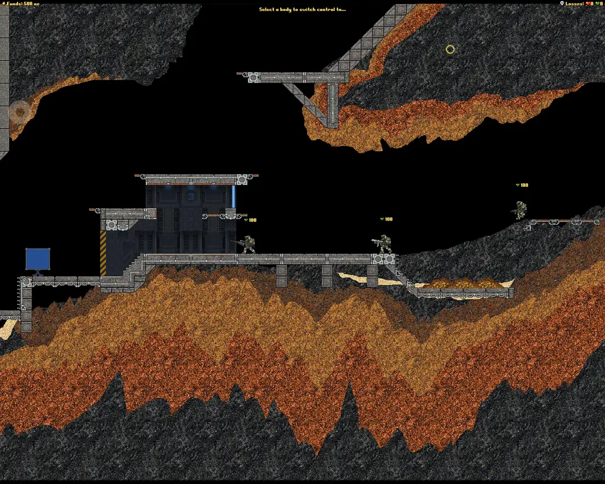
I also was naive by simply following the archetypes of existing content, merely creating copies of the same line up of guns, characters and vehicles, without seeing any other ideas outside that limited box. I could have done so much more and it would not even have been all that difficult to create either, I was simply a prisoner of my own limited thinking.
Somehow the trend and peer pressure of trying to create these unified factions even made me forget all the crazy creativity of my other experimental mods that I had created prior. I somehow felt forbidden from including these wilder ideas within these faction mods because it would have "upset the status quo" of the original game.
The experimental one-off mods I made before felt like a free playground to try literally anything, no matter how crazy it was, yet when it came to adhering to the official gameplay standards, all of a sudden I got mind-locked into suppressing myself for even thinking of adding anything crazy from those experimental mods into my faction mods too.
I must admit I was in a societal environment both in school, country, at home and even online that would readily frown upon anything different, being very swift to bully, peer-pressure and otherwise punish anyone and attack anything that didn't follow the common narratives/rules/norms. I cannot explain why that would bleed into the video game modding community, but I suspect it had an impact on my thinking - maybe in the thinking of others too.
Balancing blindly and creating bland dead-end cookie cutter content as if possessed
Although I was now pushed to think about game balance seriously for the first time, I wasn't questioning if that original balance or the original content was actually valid at its core or not. I blindly assumed that everything is as intended and I'm wrong to think to change it or disrupt it. I merely followed what already existed, trusting that it was like that for a good reason.
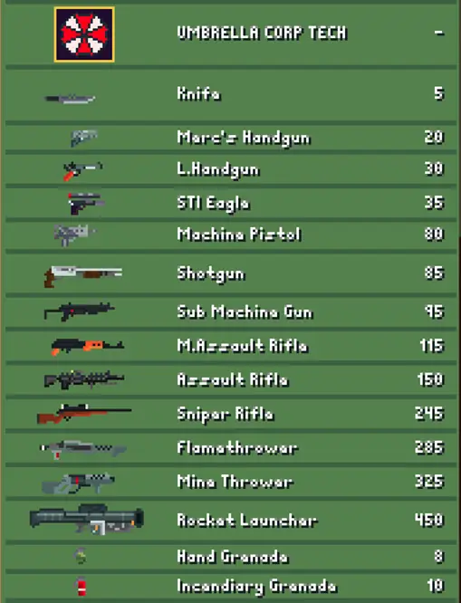
This plagued not only me but most of the creators in the community too - I would observe that most newly released faction mods often felt like cookie-cutter derivatives with only some superficial differences compared to the original game content. Some faction mods were so similar in function to each other that they were pointless to download unless I really liked the graphics or sound effects for some reason.
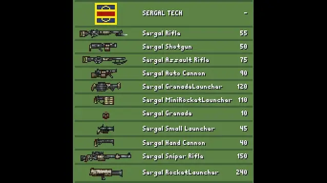
Mechanically, some of those faction mods may rarely introduce a few pieces of special equipment or special effects that are unique to that faction, but these were timid - they never really altered how the game was played.
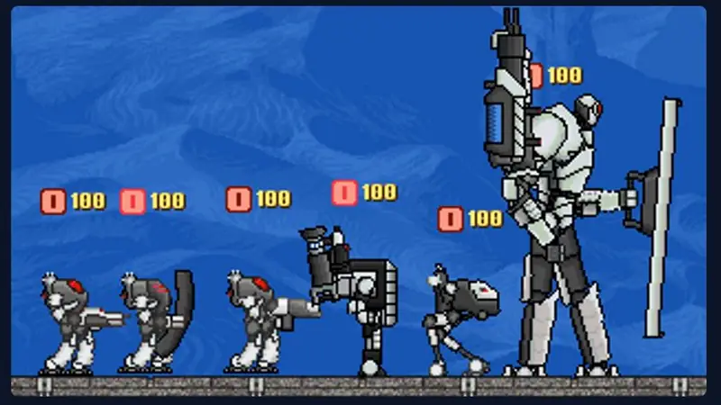
They didn't reinvent the way arsenals are structured and used, the way characters are managed and played with, the sensibilities of logistics and how the game played both on micro and macro scale, despite the base game and its modding system being quite robust and powerful to allow for quite drastic changes.
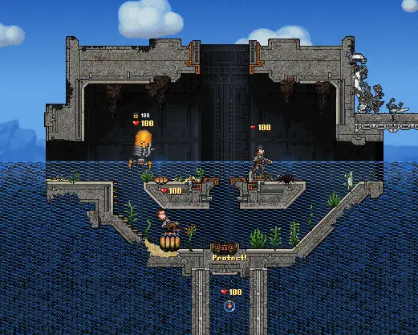
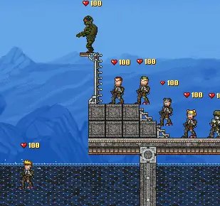
The amazing potential could be often seen in action in experimental one-off mods that people and I made, often revolutionizing some neglected aspect of the game in a way that blew everyone away.
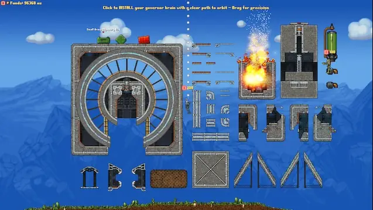
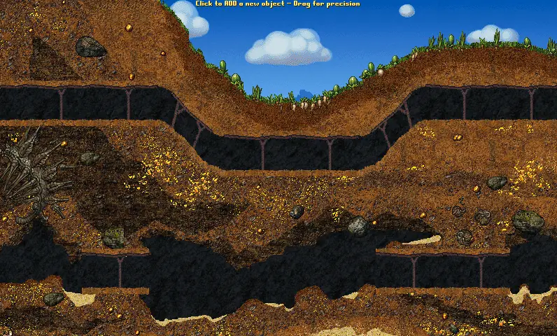
(Entirely new ways of building bunkers or enhancing the terrain. These were many mods that innovated in base building or level features in cool ways, changing how the game was played.)
Despite these revolutionary one-off game-changer mods being released, they never really lived on beyond their own release, they didn't really catch on or get expanded upon through other people's mods, despite there being nothing wrong with them and they weren't difficult to adopt either. Most of the time people still continued making cookie-cutter factions despite those new ideas being showcased and proven viable and better than what currently existed.
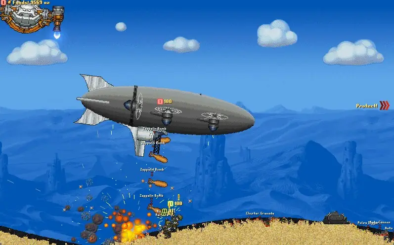
(Pretty cool zeppelin, but you see that dropship in the upper left corner? You could load that thing with aerial bombs and do bombing runs in the vanilla game too - without needing this mod.)
And even then, those with one-off experimental mods, at their core they were still often mentally prisoners of the base game's original structure, unable to reimagine or think outside the box when it came to how they were presented or how they transformed gameplay. The impact was quite limited in the end.
This isn't just me or this particular game, the parallels to the games industry are eerily identical
This article isn't about myself nor modding, I brought these points up because they're central to what I've observed in the games industry too; both in the big studios and indie developers. The things I just mentioned mirror the very experience I've described above so far when I've looked at other people developing entire games.
Cortex Command as a game was particularly unique in that it was both playable, but not really finished nor well defined as a product. Its entire development was open-ended to the point where people would describe it as a "box of Legos without instructions", with the game being so fundamentally different and freeform due to its data driven design that it could potentially evolve in any direction. Cortex Command worked as a strange hybrid between a game and a game engine where the experience of creating mods for it was comparable to building a game from scratch, except with Cortex Command (CC) it was much more accelerated.
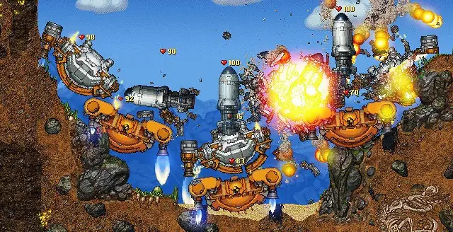
In CC, I didn't need to worry about the inner workings of setting up the basic foundations for a game - the existing ones were so flexible and universal that I could directly focus on game design and creating content. CC's foundations were so good that I could prototype and iterate on any idea fairly rapidly and benefit from the game's game engine-like nature to immediately see my results in action without so much as restarting the game.
With a game project made from scratch using a game engine or an SDK, I'd need to spend a lot of time building the boilerplate framework before I'd be able to create any kind of complex playable content. With CC, that's already taken care of! I'm directly engaging in full blown game design. CC might have its own limitations, conventions and structure that my content and ideas have to adhere to, but its universal freeform nature for how it's constructed as a game & game engine hybrid chimera meant that the amount of freedom I had was in many ways exactly like that of an indie developer.
I frequently explored other games over the years and I saw the exact same trap that I and many members of the modding community for CC fell victim to.
Be it AAA or indie, there were both one-off experimental games and also "proper games" that mirrored the phenomenon I saw with faction mods for CC. The exact same things happened where the one-off games stayed in their bubble and the proper games kept repeating themselves like cookie-cutter derivatives despite the potential for vastly improved experiences that could have been achieved with no more than a shift in the mentality. All this mental shift would have entailed a reorganization of the metagame, internal structure and its content - effectively changing things around without the game being any more expensive to build than it was in the traditional way.
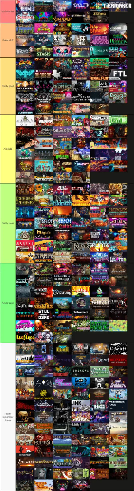
It's not like neither indies or AAA lacked talent, they had plenty of skill on both sides and showed tremendous creativity. The issue was that they were imprisoned by their own minds to have the curiosity and courage to question the status quo of game design and make changes to the fundamentals of how the very core of things were built.
Suddenly I got invited to join the official team to build content for the game
I had become a prolific modder for Cortex Command when one day I got a message from the developer of the game asking me and several other prolific modders to come build official content for the game. The instructions were simple; "take these sprite sheets drawn by the lead artist and make them into a playable object in the game".
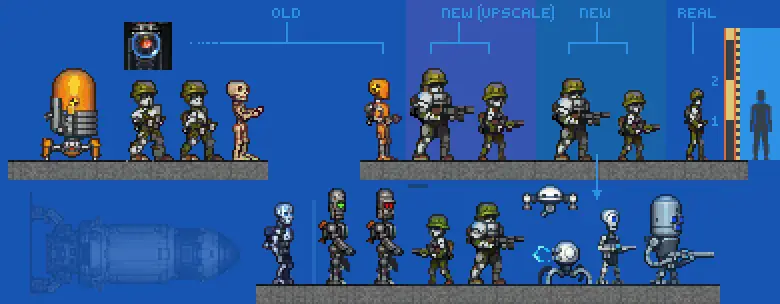
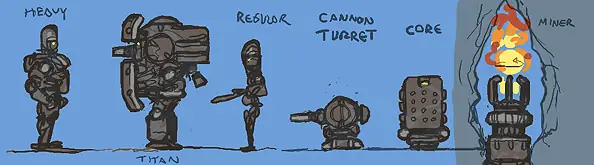
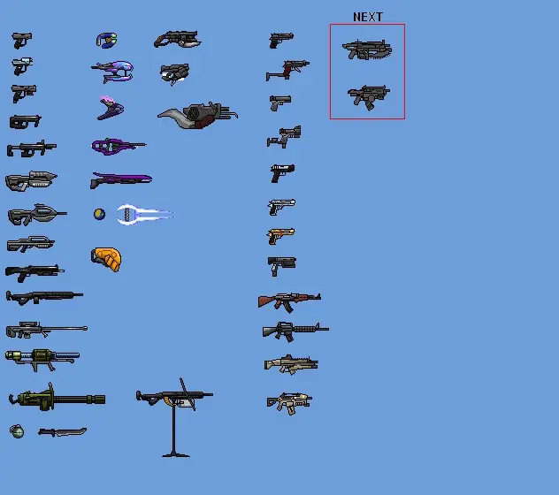
All of a sudden me and a few others were put in charge of building out the central playable content for the game.
At first, we all went with it very naively and honestly neither the lead artist nor the developer actually gave much direction or guidance for how to build any of it. The result was us doing the content by our gut. If it felt right, we built it so. The developer would occasionally chime in to say if something needed improvement, but the guidance was rather flimsy and vague at best.
My own amateur skill level inexperience at the time led me to brute force things to try to make every piece of content feel cool and satisfying. This led me to make questionable choices in setting guns to fire bullets that weighted 3 kilograms each just to get the recoil and expected damage to feel right for that particular weapon during play.
Only later I noticed this as a horrible mistake when I discovered that game actually had certain standards that the game's old original content was trying to adhere to in order to create a realistic physics simulation, but this was never brought up or highlighted by anyone until after I had finished making like 50 guns by that point.
Again, at this stage, I was still completely unaware of what game design was nor how to do it. I just built content with the belief that the base game was solid and intentionally built the way it was by a genius. I only later figured out they were winging it too - effectively designing the game as they were building it. It was the equivalent of building a house, then drawing the blueprint as they went. As ridiculous as it was, that was the reality of what was happening.
Re-examining the game on a much deeper level, my capacity for game design began to awaken
After I had gone on a work spree on making as much content as I could with the available spritesheets that were handed to us official content creators, I then found myself lacking tasks and neither the lead artist nor the main developer were really requesting anything of us. I had spare time and power so I began looking at the game as a whole for the first time. I started thinking deeper.
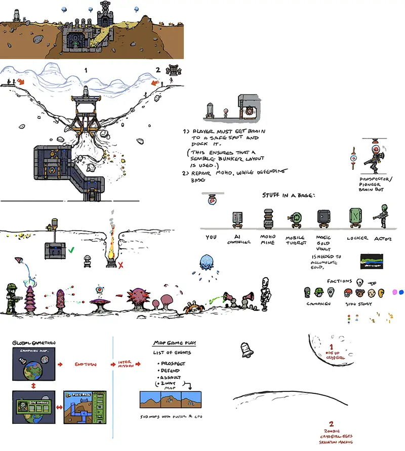
There was now a whole bunch of playable characters, weapons, items and vehicles in the game, as well as a few placeholder scripted missions and levels to fight battles on, but the game's intro, its marketing materials and the lore/designs I saw in the game's development repository made by the lead artist all suggested a bigger, cohesive game.
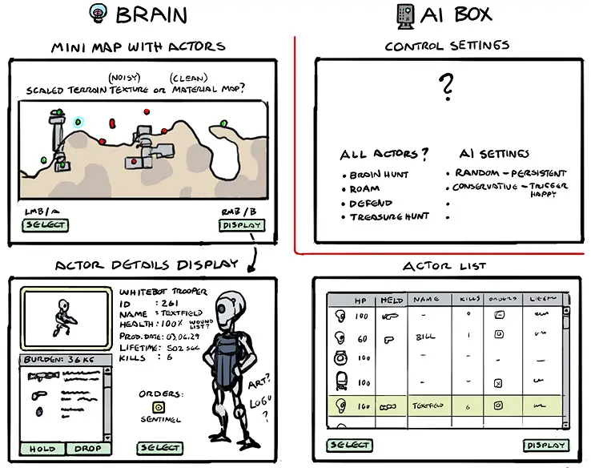
After all, Cortex Command was still in early access as an alpha/beta version and officially only had one playable mission and a tutorial map prior to us modder-to-official-content-creator people joined in. There was promise and potential of virtually infinite possibilities for what kind of content and metagame the game could have. The experimental mods had also shown that there were entire avenues that could be explored to expand and enrich the game to be something truly amazing.
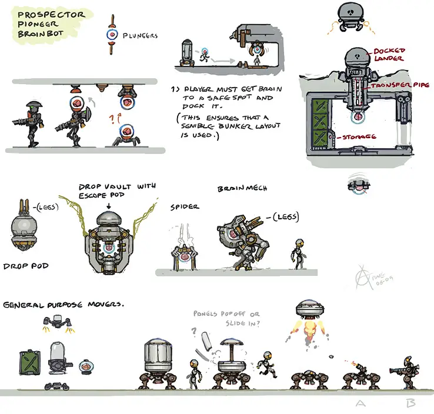
With the new content me and the others had built for the game, I actually sat down to try to play the game for real. Prior to this I had merely been "playing" the game by making mods and testing them in action. I never really had truly played Cortex Command as it was still in early access beta version. There wasn't really anything to play beyond the demo and infinite survival skirmish mode that came with the original package.
I started noticing that during play, many aspects of the game's engine weren't actually being properly utilized by the content we had made. If it were maps, we didn't provide alternative pathways or we'd use arbitrary logic to build scripted maps that had to be traversed a certain way; according to our will in a rather bland simon-says way. This was primitive and stupid for a game that had fully destructible terrain; we weren't using the core strengths of the game's own system at all. We were instead trying to fight against it and create solutions that stepped over the game's own incredible features.
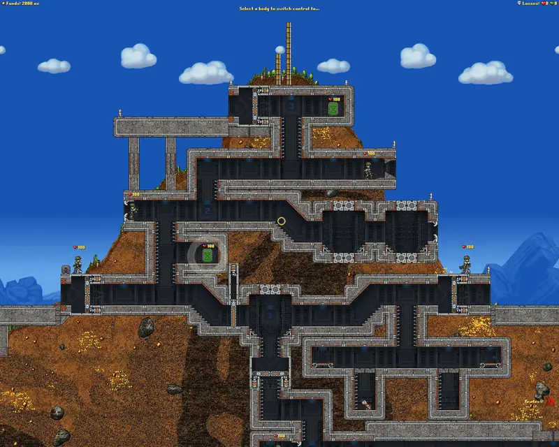
We also failed to take into account the performance limitations of the game and made scripted maps that would literally spawn a new enemy characters infinitely to populate the map continuously without any way to stop it when the game could only handle a mere few handful of soldiers per team before massive performance losses and engine breakdowns started to happen.
Guns and effects were also naively built in isolation, focusing on making the single instance of a gun, effect or explosion to look as impressive and complex as possible without thinking of how stupid it is to set them up that way performance wise when multiple instances of those would frequently happen at once in actual gameplay. Needless to say we were actively making the game constantly lag and freeze for no reason like idiots.
Player wise, without realizing it we were telling the player the player to individually control a group extremely fragile, cumbersome and error-prone soldiers in a very hazardous environment against a fully automated AI enemy force with infinite resources that can simultaneously control all of its soldiers all at once with no way to pause time, slow down time or safely control all your soldiers without issues, all the while having to keep tabs on multiple characters to ensure they do their jobs right and down accidentally end up neglected or end up dead in some dumb way.
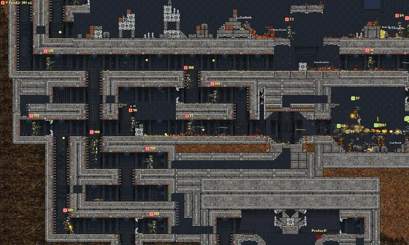
I mean for fucks sake, thats just inhuman to the poor player to ask them to micromanage all that crap and to expect them to stay sharp the entire time or risk losing the entire game due to even the smallest mistake. All the while the AI opponent is practically cheating in every way possible and set to overwhelm any human out there regardless of their skill or focus. The entirety of how the game was set up to play was broken, unfun and unfair on so many levels.
It should have been scaled down to the scale of squads of highly customized 3-4 soldiers per team max that are cheap and easy to replace with a focus on objectives than resources, not the awful "balance" that the game came with for its placeholder skirmish game mode, both moment-to-moment gameplay wise but also metagame wise of the larger logistics that the game revolves around.
The vertical open space for delivery spacecraft to travel down and up from orbit to the surface of the planet was also poorly planned and far too short on most maps, making the entire aspect of anti-air gameplay non-existent or just too absurd to work correctly. Any aerial gameplay potential was also lost.
Maps also weren't designed with interesting structured features like flora or fauna, animal nests, abandoned randomized ruins or other natural elements or hazards that the player or AI opponent would have to contend with universally on all maps.
The potential for introducing water/liquid zones, burning fire, adhesive objects, EMP/Biological damage types and weather systems didn't occur to anyone before so therefore none of the existing levels, characters, weapons or vehicles had the support for these things within their innate designs for how they were built.
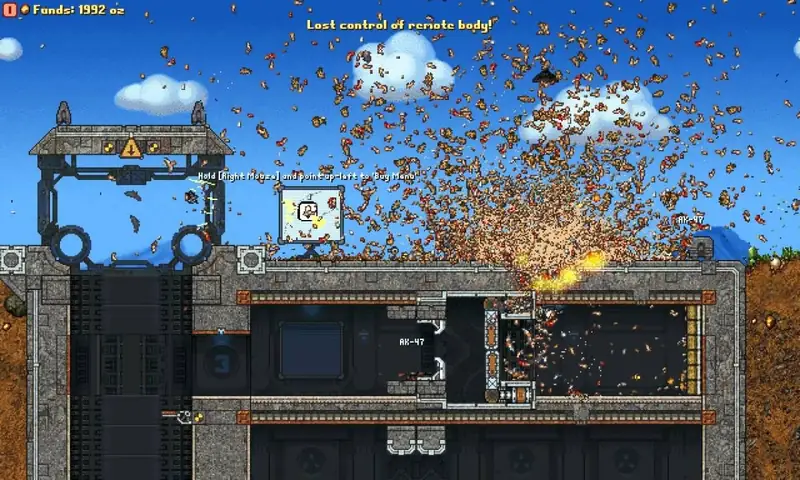
The list is very long of many things that were either fuck ups, oversights or short-sightedness that needed major overhauls and had great potential. CC had a plethora of other deep problems that needed addressing too, but they were tolerable enough to still turn the game into something majestic.
I started seeing the bigger picture - I was finally beginning to see what game design was and how to do it.
Everything depends on whatever is under it
My original task as an official content creator was to build guns based off a spritesheet I was given. I did that task directly.
What I realized after my awakening into game design is that the designs of the guns depended on the characters they're used by and what the characters want to do with those guns.
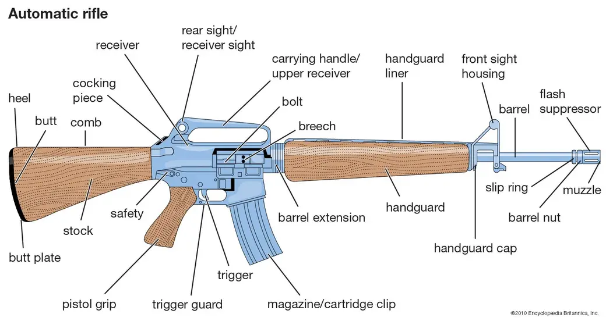
You know, factors like purpose of the gun, environment the gun is used in, mechanical functions of how the gun works, physical limitations of the gun’s systems and material/labor costs of creating and maintaining the gun. These things and many more suddenly began to pop up as factors I should be thinking about when I was making guns.
Hahaha… ha… whoops.
So uhh, no one told me about that rather now-obvious-in-retrospect thing and I was too young and clueless to realize I was supposed to ask about it and think about it.
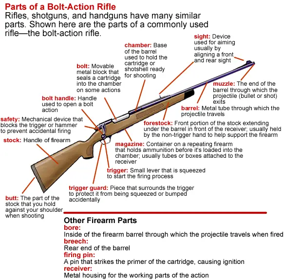
I had never shot guns in my life nor was I ever expecting to think of them in any other capacity than those fun 'bam bam toy things' I had fun with in various video games I had played by that point.
The idea of real-life military tactics, technological aspects, logistical concerns and engineering constraints weren't something an aloof 15 yo kid living in a peaceful country would really be concerned with. To me "haha video game gun go brrr'' was plenty enough fun for me back then.
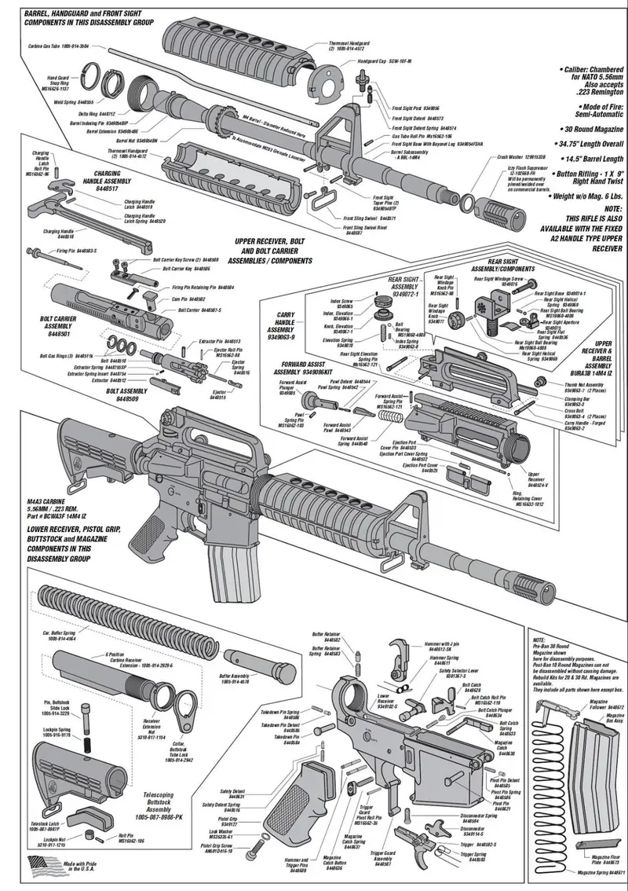
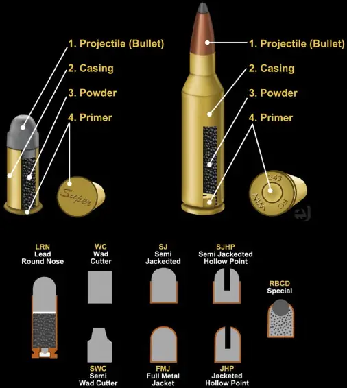
(Clueless me 4: “What?! The bullets are complicated too? I thought those were just a simple piece of metal! What do you mean the casing and the bullet separate? I thought a gun fires the whole thing!”)
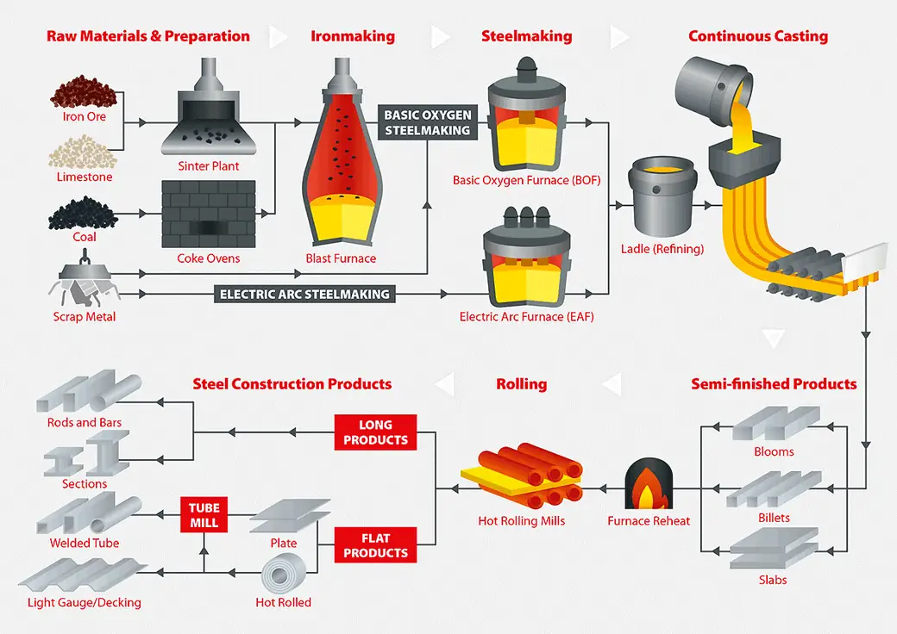
(Clueless me 5: “What is all this nonsense? This is how metal is made? All those machines and steps just to make some pieces that then can be used to make a “simple” gun? Logistics, mining, refining, smelting, manufacturing, engineering… What are those? What do you mean they’re important?”)
But the guns were only the tip of the iceberg. After I realized that guns should be designed around the characters involved in combat, I then realized that the characters should be designed based on their environment.
I mean, if I'm preparing to send out a soldier onto a battlefield with various hazards and elements I need them to be able to overcome then that directly affects how I should design their outfit and capabilities.
If there are lethal flying debris, I should give them proper protection to resist them. If there are walls they need to overcome I should probably give them something to help them get over them. If there's water to swim or sink in, I should probably give them a floatation device or scuba gear. If there are high drops or risk of collisions against hard surfaces, I'd want them to have something to mitigate that. If my guys catch on fire, it's probably good to have something that will extinguish the flames. If their equipment load was too heavy to carry, were there any methods to help out with that?
Did any of the characters in either the official content or most mods take these into account? Nope.
Just to highlight how bad this is, those would have been common occurrences that would be constantly present in most situations on most maps.
Existing soldier characters were often exposed, not given proper tools to go up or down vertical shafts and had poor protection against anything. It was a nightmare how poorly they were designed and how inadequate they were.
Drilling deeper, similar realizations also hit the vehicles, base building aspects, defensive systems and how bunkers and terrain were structured. Everything was a total mess.
I noticed that if I wanted to design a gun, I'd have to consider this chain each time, starting from left and going towards right:
Performance consideration of a computer > Premise of the game > Basic Natural Laws Of the In-game Universe > Environment (gravity, terrain, resources, hazards, flora/fauna, air space, atmosphere) > Vehicle or Character that uses it or is used on > The Gun Itself
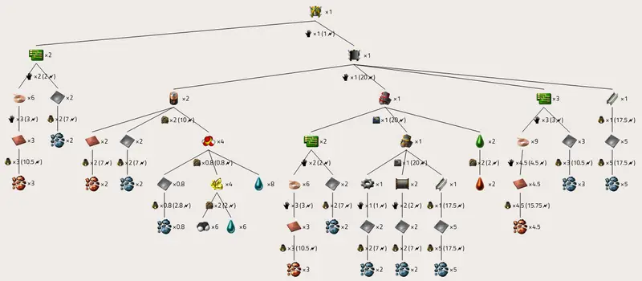
(In the game Factorio you can make flying robots. This recipe chart shows just how much raw materials (copper ore, iron ore, water, oil), components, labor and energy goes into making just one of these robots. A lot of these things are what most of us take for granted, yet knowing about this complexity is what allows us to design and balance things masterfully.)
In the words of Carl Sagan, "if you want to create an apple pie from scratch, you must first invent the universe."
What he meant by that is that the final result of what the apple pie is, is a result of many things that surrounded it that made it possible for it exist; The way physics and chemistry works, the way thermodynamics work, the way nature and its rules work, the way these things define the environments, people and tools that are ultimately necessary to create that darned apple pie.
Do you realize where I'm getting at with this?
There is a lot we humans take for granted that creates blind spots in our understanding that causes us to make poor design decisions.
We need to be humble to recognize our lack of knowledge, notice any biases, assumptions or jumps to conclusions that we have or do and begin to look at the world around us as an interconnected whole.
What this meant was that I had to step back away from the guns and rethink entirely how I should build things for this game by taking into account a lot of things that validated that gun's existence and therefore would shape its final result. Instead of building guns, I should first go way back in the chain and consider standardizing rules for how levels are built, both regarding their natural terrain and manmade bunker aspects.
But prior to that, I should take a step back even from that to standardized basic things like: How should various explosion types and sizes behave in the game. Same for smoke, sparks and liquids (oil and blood). How should bullets/shell casings be unified. How should burning fire behave. Or electricity, or radiation, or poisons, or EMP, or status effects, or... and so on.
How aspects of flora or fauna are set up in terms of their properties and behavior. How should armor and materials be defined for all aspects of the game, including characters, vehicles, terrain, items, props, guns and other things.
How to encourage modders not to deviate from these standards and create incompatibilities by not creating their own separate versions of explosions and fire that don't correctly support all the mechanics and elements that drive the game's content.
How should the game flow in terms of logistics? How should moment-to-moment combat and motion feel? How should the controls, user interface (UI) and heads up display (HUD) support the player with information to help them have the intended gameplay experience detailed above?
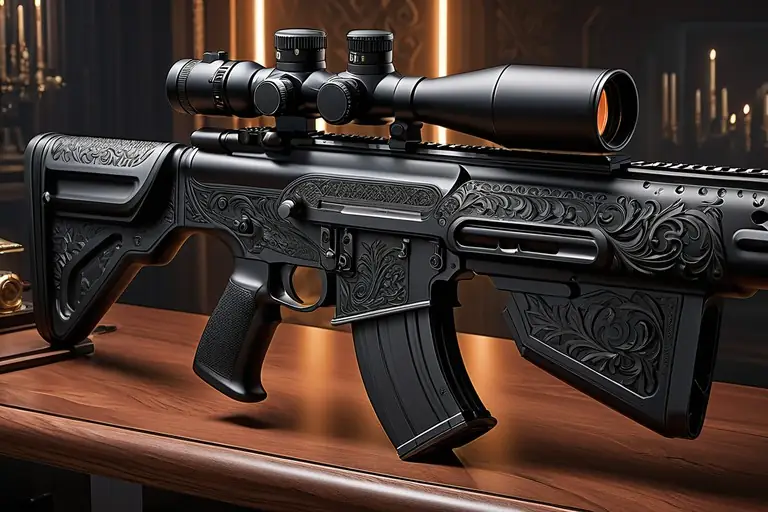
After this is done, I could then start defining the environment and their different elements. Then vehicles/characters. Only after all those I'd finally be allowed to work on guns - not before any of this!
This would ensure that content is of high quality and it would support one another, remain intercompatible and interact properly and cohesively. It would also ensure that whatever is designed will be fit for its purpose and built-in with balancing that originates from sensible standards, removing guesswork and the risk of accidentally creating something arbitrarily overpowered or useless.
It would also promote a method of thinking when approaching making content that - be it official or modded - would naturally cause the content creator to think much more widely and openly in what they should do and how to do it.
It wouldn't be about just lazy cookie-cutter archetypes anymore where a person thinks they need to make to a pistol, rifle, shotgun and a grenade, but instead think that the heavily armored climbing specialist character needs a weapon that can dispatch multiple weak enemies quickly and reliably in confined spaces with the specific in-game universe rules and parameters that influence that situation. This would stimulate in creating entirely new weapon concepts that aren't those lazy traditional archetypes anymore, resulting in true infinite variety and evolution in content and gameplay.
All of this breeds a new way of thinking, it opens the mind to see everything differently and create much better design for the game and its content.
All of what I just described that I figured out in Cortex Command is directly applicable to general game design too, regardless of the project and its goals.
In my opinion this is very transformative information that you should pay attention to because it allows you to see a new way of how to develop games in a way where you break free from traditions, create more nuanced and higher quality game design that will make your game and your content far better than any derivative crap currently out there.
If you want to achieve innovation, this is the definitive, best way to do it.
Building a solid foundation first results in far better content value and playability
Once I had learned this lesson, my entire approach to making content, mods, games and anything else fundamentally changed.
Today, whenever I'm tasked with creating game design, the very last thing on my list is the actual playable content. The importance of setting up a solid foundation first for that content is far more important as it will define the value of said content.
Failing to do this will result in hollow, throwaway content that'll get flushed down the toilet as useless trash that has no value and no future beyond its novelty factor.
Before learning this, I had effectively made a bunch of things that were fun for 5 minutes, but took 5 hours, 5 days or even 5 weeks to make. I was wasting my time and the time of the players by creating things that were laborious to build, but had minimal value and minimal staying power.
After learning this lesson, I recognized the potential to REVERSE this input-to-output ratio. Nowadays I can build something that takes me 5 weeks, 5 days, 5 hours or even 5 minutes to make but ends up being useful for 5 weeks, 5 months, 5 years or maybe even indefinitely.
This is all thanks to how well the foundations of the game is designed and built, the standards established within, the flexibility of what kind of content can exist in it and how it can manifest in the game.
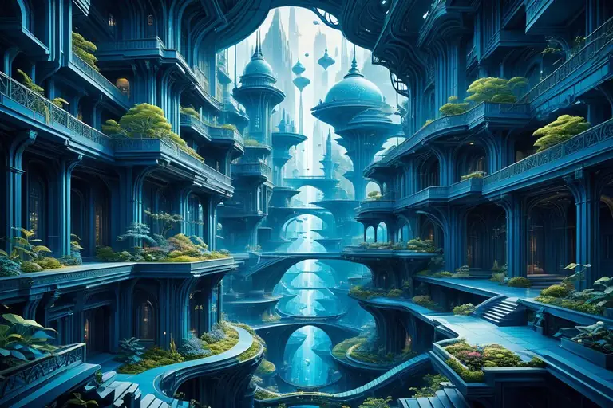
In other words, taking the time to figure out how to organize the game as a whole from ground up will result in a far more supporting environment to guide the creation of any playable experiences or any game content in a way that has these benefits:
- After a solid foundation is built, the amount of effort I need to build new content is much less vs the amount of value and longevity it will have.
- The created content is much more valuable in terms of how long I can play with it and how much fun it brings me. I am able to create content that is essentially timeless - always fun no matter how many times I play, even if I return to the game years after playing it to play it again.
- I don't have to brute force my way when I'm creating content, thus skipping the creative frustration of trying to forcibly make something work that I'm not sure of.
- Balancing content becomes natural, intuitive and organic - I don't have to come up with convoluted arbitrary nonsense to justify my balance changes to my content.
- I end up being far more creative and innovative with the content I create because I'm no longer relying on existing archetypes as crutches but looking at the present conditions and parameters to guide me in creating custom made solutions that make sense for that environment in particular, resulting in emergent creativity.
- Thanks to standards set up in the foundation of the game or the content creation process, I'm able to create content that is far more intercompatible, unified and potentially even modular. This means any new content I create has the potential to have exponentially multiplicative gameplay value compared to unstandardized content that might clash against each other and prevent me from mixing them. It also avoids waste where new content does not replace, obsolete or override old content, meaning I can have old content gain new life when it interacts with new content and vice versa.
The flipside to all this is of course the added time and patience needed to sit down and work on the somewhat boring boilerplate details of setting up foundations, frameworks, standardization and many other non-visible support structures to make it work.
But honestly, after I personally saw and experienced the benefits and potential of doing game design and content creation this way, I'd never go back to doing things the old way. The thing about building a foundation is that I only need to do it once and do it well. After that, everything becomes faster than if I were to do things the old way by laboriously and carelessly brute forcing everything. In the long run it is much less effort and results in cleaner outcomes than my old method ever achieved.
A great analogy to visualize this is that my old way was me carrying buckets of water to home manually, whereas my new way of doing things is building a water pipe and a pump to my home and all I need to do is just turn on the tap once it's all built.
Setting up foundation can be fun too; I acquired a genuine reason to learn more about the world around me
In efforts to create better content and better systems - be it in Cortex Command, mods or the games I make - I suddenly had natural motivation to find out about things that previously were uninteresting to me.
Depending on what I was trying to design, I might end up on wikipedia, youtube or some other website to look up information, pictures, video footage, infographics or documentaries to learn about it. I'd look into engineering, logistics, science, astronomy, cybersecurity, futurism, nature, anatomy, history, physics, chemistry, mathematics, weather, biology, aviations and many other topics while I was trying to chart out the scope and possibilities for a particular system I was designing for a game.
While the process of figuring out standardization and foundations for a project is complicated, slow, doesn't yield anything visible or playable in itself and is mentally exhausting, I was actually learning about the world around me with such passion and enthusiasm that the schools and teachers I had could only dream of from their students. This was actually quite fun, fascinating and motivating as I could see more and more possibilities and ideas in how I could shape my systems, content, features and mechanics.
I also gained a wider appreciation for many things in life I had previously taken for granted, which also was motivating in its own way. I think I can thank it for preventing nihilism, depression or apathy that I see so often in others. The more I learned about things with potential, the more abundant and limitless the world felt to me.
It's worth mentioning that I only studied the minimum necessary information that was relevant to my project or the particular task I was doing; I didn't need to become an expert in the subject or even retain that information in all its details. I kept looking for what I needed for my project and stopped as soon as I felt I had enough, that spending any more time wouldn't yield me anything substantial beyond what I had already found.
Overall this process of delving into details made me a much better game designer as I understood my subjects in more depth, allowing me to design my content more believably where it was appropriate. This also helped me find out a lot of interesting nuances that opened doors to entirely new mechanics and systems that could completely transform my project in a significant way. I was no longer a slave to blindly following traditions and repeating the mistakes of others - I was carving my own path and doing real industry innovations in my projects.
Beyond just the game itself - Zooming out even further
At this point I had effectively gotten good at game design and content design. I knew how to make the correct design decisions for virtually any point in my projects, no matter how small or big.
This was all thanks to the various information I had come across; Nonviolent Communication, Game Developer Conference Talks, being a lurker/observer/participant in various gaming communities, plus all the information gathering I mentioned above, my previous experiences as a modder/dev and much more.
On the outside it looked like procrastination of countless hours watching videos and browsing forums, but the truth is that's how knowledge accumulates, digests and gets organized inside the brain little by little. Procrastination is necessary and healthy; it's a natural way of learning even if it looks “lazy” on the outside.
Either way, I felt very confident in my skills as a game designer and indeed I now had a foolproof method to do game design within the game itself. My time in creating mods and working on Cortex Command officially was plenty enough hands-on experience to actually create and release something.
However then I came across the topic of marketing and how people even come to playing games in the first place, as well as all the logistics that surround the game project.
These were things like advertising, publishing, packaging, monetization, maintenance, updates, roadmaps, lifecycle of a game, first-time-player-experience, communication, community management and many other aspects that aren't directly part of playing the game itself, but actually still are part of the experience overall.
Think of it this way; a game doesn't magically appear on your computer and you don't find yourself immediately staring at the start menu or main menu of the game software. There are a whole bunch of things that go on before you get to that moment. This assumes the game is brand new and there isn't a friend there to recommend it to you.
Things like advertisements, box art, marketing that show screenshots, video or gifs of the game in action somewhere online or in a magazine, the online store page or a live event that is showcasing the game, even if it's just an oversized cardboard cutout of the game's main character or some other publicity stunt.
All these things are part of the game experience. While you're not de facto "ingame" yet, the experience of the game already began with these auxiliary things.
This realization caused me to zoom out even further to see the game as a whole in the fullest extent, not just limiting myself to seeing what happens inside the game, but also everything around it and recognizing that game design needs to take into account these things too. I suddenly began seeing the "game" begin the moment the player sees or interacts with any of these "outside" components that surround the game.
I saw opportunities how I can implement the monetization, marketing and the community aspects of the game in ways that fit that particular game project in the best way possible, often finding ideas that differed a lot from what is commonly known or seen.
In some respects I could even make it feel like the real life components (marketing, community, advertisements) blended seamlessly with the ingame experience, making everything more immersive, seamless and funner.
Even within the game, I began considering the main menu, pause menu and even the game folder itself to be part of the game too - even if in a mere roleplaying capacity in terms of how they are presented, what kind of language and art is used to make everything feel immersive and seamless with the actual ingame gameplay.
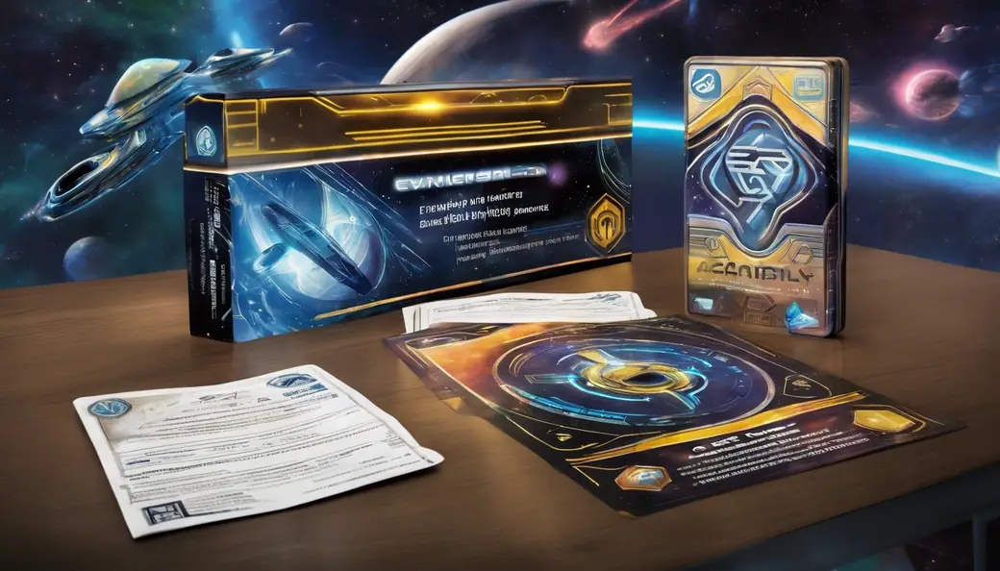
A simple example of this is; let's say there is a game where you play as starship pilot and the box art or store page is formatted and illustrated in a roleplaying lighthearted sort of way like you're applying to the academy and receiving your license to fly your ship.
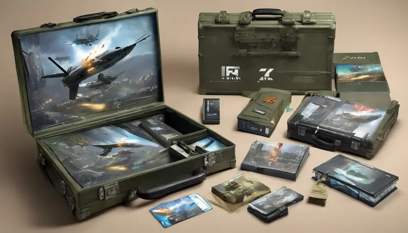
Or let's say it's an RTS game about commanding an army, so the game's store page or box art is formatted like a military briefcase containing authorization codes to give you access to battlefield controls.
Or a gardening game has the box art look like a gardener toolkit, with the text and descriptions sounding more like an invitation to a garden that has been handed into the player's care, showing an overview and a map of where they'll be doing their gardening stuff in.
All this would result in better marketing strategy, better community interaction dynamics and making the game more profitable in a way that doesn't abuse or feel sleazy. It's also cute, badass, fun and/or immersive in its own endearing way that I'm sure a player will appreciate.
Wrap up and why I wrote this article
I wanted to keep this article as short as possible, but the truth about game design is that the devil is in the details. I tried to capture the most important parts of my journey in improving as a game designer without making it neither too vague nor too elaborate to keep this thing still somewhat readable.
The moments and realizations I've mentioned here were some of the most important ones to me personally and changed me the most. Thanks to them I'm unable to work the same way I did when I started, the way I look at game design has changed so much that I would do everything much differently even if it meant more work upfront and have me deal with thankless tasks, such as setting up foundations rather than going for the "easy" low hanging fruit of "do something now, ask questions later" approach.
I also think this is ultimately where all game designers will eventually end up once they notice the same things I already experienced. My goal with this article is to hopefully shorten the time for other intermediate game designers to have the same epiphanies as I did so they'll waste less time making something that'll end up being flushed down the toilet instead of becoming something timeless and valuable.
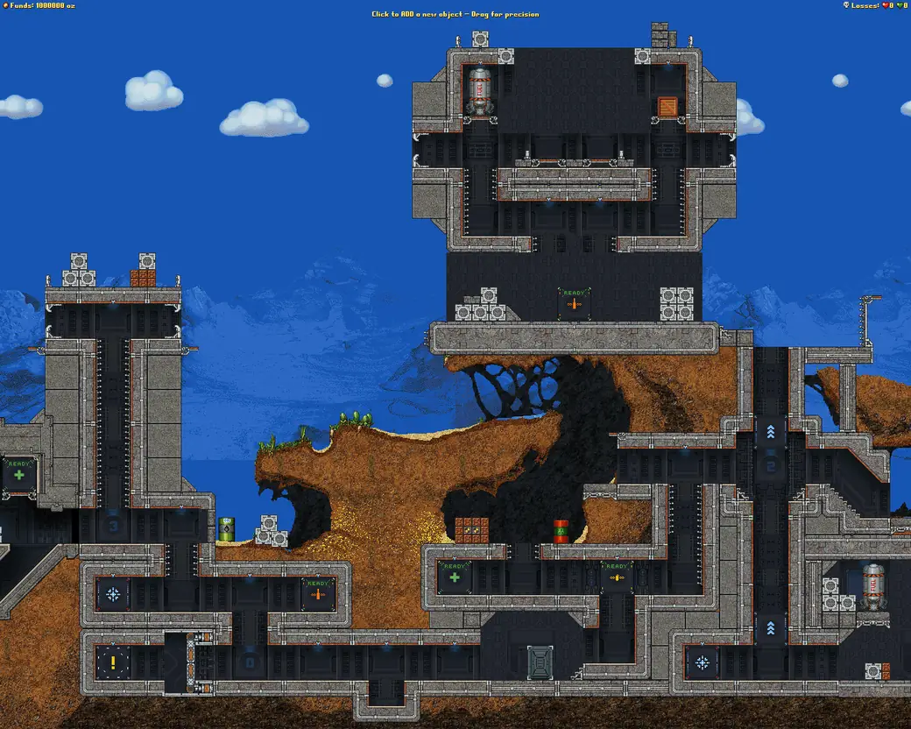
Much of the work I did with mods and Cortex Command’s official content turned out this way and there is nothing to salvage there. For it to work, it would need to be built from ground up, from scratch. All I can say is that it was “a learning experience” and gave me some temporary enjoyment back when everything was at the height of it, but honestly there are better ways of learning that save time, resulting in long lasting creations that would still be valuable even after many years.
But more importantly, I also see a lot of games, mods and other media being finished and released that feels like throwaway garbage. These often come with pretty packaging to make it look shiny and desirable, but the inside they are hollow and rotten.
Those games ultimately become a disappointment to the player who will likely quit the game. This in turn will disappoint the developer when the thing the dev worked on so hard, so proudly and put all that intense effort into it turned out not to have the staying power they hoped it would.
Especially so when that polished yet hollow thing took potentially months if not years to make. Such experiences can be very painful and even cause people to quit making games altogether.
I'd like things to be better than that so I hope the information of my story and the advice I provided in this article will help you fast-forward in mastering game design.
This is why I advocate so hard on creating a strong foundation for your game, even if it means sitting a bit longer in the design & research phase of the development. I guarantee you; that time will pay itself back if you keep at it.
Don’t neglect game design, master it. No art, writing or code will save a game and all the other work you do if the game design wasn’t done well.
Talk about it
Questions, disagreements and ideas of your own are all welcome. Discuss this article with other readers on the Reactorcore Games Discord, follow new articles and dev news on Patreon, or write to me directly.